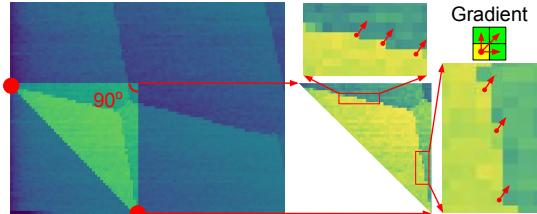
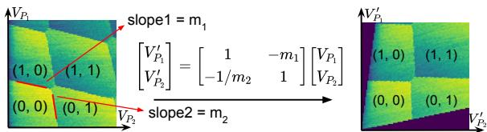
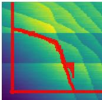

为什么需要虚拟电极
门控定义的半导体量子点中，每根金属栅极产生的电场在空间上没有截断：一根柱塞栅（plunger gate）除了决定”自己的”量子点的电化学势，还会通过寄生电容拉动邻近量子点的电化学势，甚至改变点间势垒的高度。这种栅极串扰（capacitive crosstalk）在电荷稳定图上表现为倾斜的电荷隧穿线——理想情况下某点的隧穿线应只沿自身柱塞栅方向延伸，串扰使其对另一根栅的电压也产生依赖。
单点、双点时代，实验者凭经验手动”回拧”其他栅压即可补偿；但当量子点阵列扩展到数十根栅极时，串扰使控制空间变成一个高维、强耦合的电压空间，人工调节逐渐失去可行性。虚拟电极（virtual gate，又称虚拟栅极）把”同时按精确比例拧动多根物理栅”封装成一个新的软件坐标：每个虚拟电极原则上只影响一个目标参数（某点的电化学势或某势垒的隧穿耦合），而把对其他参数的一阶影响消掉。它最早由代尔夫特理工大学 Vandersypen 组在九点 Fermi–Hubbard 阵列等工作中系统化，2019 年普林斯顿大学 Petta 组又将其发展为自动校准流程的一环，如今已成为阵列级调控与自动调控的标准接口。同一工作也把虚拟门推到了最戏剧性的应用：在 9 点阵列的 9 维电荷稳定空间里用 变换规划电荷穿梭轨迹，实现 ~50 ns 单电子穿越全阵列（见该词条）。调谐策略本身也可以”换角色”：等宽交叠纳米栅上把靠近/远离比特的栅互换势垒与柱塞职能，可把 Si/SiGe 的交换可调性提升数倍至一个量级（16 dec/V）而虚拟门框架不变——见交换型两比特门词条”栅极角色互换”一节。
理论模型
线性映射与变换矩阵
在一个局部工作点附近，物理栅压变化 与各量子点电化学势变化 之间是线性关系。把变换矩阵记为 （即归一化的交叉电容矩阵），有
其中 是由器件杠杆臂决定的常量， 被定义为虚拟电极的电压变化量。写成矩阵形式：
理想情况下 应当近似单位阵——每个虚拟电极分量只驱动一个 。测量与校准的任务就是求出实际的 ，再用其逆矩阵组合物理栅压：
在 Si/SiGe 2×2 阵列中采用的写法与此等价：，其中 与 分别是由物理栅极（P1、B1 等）与虚拟栅极（vP1、vB1 等）构成的列向量，串扰矩阵 的维度达 （7 根势垒栅 + 4 根柱塞栅），用 对物理栅压做线性组合即得各虚拟电极。需要强调的是，虚拟电极的电压绝对值没有物理意义，有意义的只是其变化量 ，单位与物理栅压一致。
从隧穿线斜率提取变换矩阵
变换矩阵的非对角元不需要逐点拟合电容，可直接从电荷稳定图读出。关键观察是：沿量子点 的电荷隧穿线移动时，该点的电化学势不变，即 。代入线性映射，并在只扫描两根栅极（横轴 、纵轴 ）的二维相图中化简，得
约定对角元归一化为 1，则非对角元直接等于隧穿线斜率的相反数：
即量子点 的隧穿线斜率。给出的实例中，某双量子点器件测得 、，于是
扫描虚拟电极而非物理栅极重新测量，同一对电荷隧穿线变得互相垂直——两条隧穿线不再相互影响，独立控制即告建立。这一”隧穿线变直/变正交”正是虚拟电极生效的直接实验判据。
多点阵列的迭代更新
把虚拟电极扩展到 个量子点时，不需要一次性测量完整的 矩阵。相邻双点依次建立局部变换矩阵后，新旧矩阵按乘法复合即可：
为更新前的矩阵， 为从新加入双点的电荷稳定图提取的矩阵。其物理基础是：在对新点更新之前，旧虚拟电极对新点的影响与对应物理栅极完全相同，因此新矩阵可以直接在旧坐标下测量。这一递推结构使矩阵更新的测量开销只随阵列规模线性增长，是虚拟电极可扩展性的关键。论文附录给出的矩阵更新实例 （耦合增大后重测斜率并复合）是同一规则。
虚拟势垒栅极
同一思想可推广到点间隧穿耦合的独立调节，称为虚拟势垒栅极（virtual barrier gate）。但势垒栅对隧穿耦合的调控不是线性的，而是强指数依赖：
表征该势垒栅的调控能力。在 2×2 阵列中测得四个最近邻势垒的 值从 到 不等，最弱者仅为最强者的 21%。硅基阵列中最近邻隧穿耦合之间的串扰通常很弱（以 为参考点表征时基本不动），但并非严格为零：例如增大 会把 QD4 推离 QD3 而显著压低 。此时可从数据提取交叉调控系数 ，在扫 的同时按此系数补偿 ，实现对各最近邻耦合的独立控制——这正是指数型”虚拟势垒”的手动实现。
自动化实现
虚拟电极把串扰补偿变成纯代数运算，因此天然适合交给计算机。两个关键环节：
- 斜率自动提取：自动调控流程用霍夫线变换（Hough line transform）从电荷稳定图中检测（可能残缺、被遮挡的）隧穿线段并返回斜率，配合卷积神经网络（电荷态识别）对相图分类，虚拟电极的建立可以完全无人工干预。
- 量子点遍历（quantum dot switching）：阵列调控按”双点为最小重复单元”进行——先把 QD1–QD2 调至少电子区并建立 VP1–VP2，再加入 QD3 组成新双点调控，旧虚拟电极保护已调好的点不受影响；共用的 QD2 因排空电压已知而起过渡作用。每加入一个新点，就按上节的乘法规则更新一次变换矩阵。流程还配有回跳机制：迭代超出电压范围仍未成功时回到初始化位置、抬高势垒初值重来。在一枚含 15 根栅极（5 根势垒栅 + 4 根柱塞栅 + 传感器栅）的四量子点器件上演示了全流程：加入 QD3 前后重测 VP1–VP2 相图，少电子区位置几乎不动，证明虚拟电极对既有电荷态的保护能力。
快速提取：只探约 10% 的数据点（Che 2024）
传统流程的瓶颈在于为每对相邻柱塞栅采整张电荷稳定图：每个电压构型 都要物理设定电压、等待毫秒量级的驻留时间（dwell time，由电压线上的重滤波决定）、再读一次电荷传感电流，一张双点 CSD 要花数分钟；大阵列的矩阵提取开销随之爆炸。Che 等人的观察是：构造虚拟化矩阵只需要跃迁线的斜率，而跃迁线及其邻域只占 CSD 的一小部分——绝大多数数据点是冗余的。
方法分三步。第一步利用器件物理先验框定临界区域：跃迁线斜率为负，且 线比 线更陡（可由量子点电容模型验证）；因此只要在两线上各找到一点（“锚点”，anchor point），两条跃迁线就都被限制在锚点张成的直角三角形内。锚点由预处理给出：先沿对角线均匀探十个点，再用跨三个像素的正斜率掩码（比单点梯度更抗噪）从最亮点出发沿 、 方向搜索。

锚点三角形约束：两个红点分别位于 与 跃迁线上，高亮直角三角形区域保证覆盖两条跃迁线；跃迁线上的点在正倾斜方向具有更大的梯度（右上插图），这是后续搜索的物理特征。坐标轴为两根柱塞栅电压 、。图源：Che et al., ASP-DAC (2025)，Fig. 4。
第二步在三角形区域内定位跃迁线上的点：跃迁线处电荷传感电流发生尖锐跳变，对应”正倾斜梯度”特征——某点的特征梯度取其与右侧像素 及右上像素 电流差之和（ 是电压颗粒度，“像素”指电压网格而非真实图像像素）。行优先（自下而上）与列优先（自左而右）两个方向的扫描互补：行扫描对 线高效、对 线因截段变长而更易受噪声干扰，列扫描正好相反；扫描过程中三角形区域随新定位的点动态收缩，保证只探跃迁线附近的少数点。
第三步提取斜率：以两锚点与两线交点参数化两段线性形状（交点坐标为拟合参数，用 SciPy 曲线拟合），斜率即由交点与锚点算出，再按上节 的规则组装虚拟化矩阵。

虚拟电极效果的直观示例：应用虚拟化矩阵后，同一双量子点的两条电荷跃迁线由倾斜变为相互正交，两根虚拟电极各自独立控制一个量子点的电化学势。图源：Che et al., ASP-DAC (2025)，Fig. 3。
在 qflow 数据集第二版的 12 张真实器件 CSD（工业 300 mm 生产线制备的三量子点 Si/SiGe 器件，双点构型，分辨率 到 ）上的基准测试显示：相比”采全图 + 霍夫变换基线”，快速提取平均只探约 10% 的数据点（最少 、最多 ），运行时提速 5.84× 到 19.34×（例如 图从 降到约 ， 图从 降到 ），且 12 张中成功 10 张、成功率高于基线（基线在 CSD7 上失败）。提速几乎全部来自探点数量的减少——对规模化阵列，这意味着虚拟电极标定时间随栅极对数目线性增长的斜率被压低一个量级。

快速提取方法在 qflow 基准 CSD 6 与 CSD 10 上的实际探点分布：绝大多数探点集中在两条电荷跃迁线附近，另有少量用于确定初始锚点；坐标轴为两根柱塞栅电压。相比全图扫描（100% 采样），本方法平均只探约 10% 的电压构型。图源：Che et al., ASP-DAC (2025)，Fig. 7。
参数与量级
| 量 | 典型值 | 来源 |
|---|---|---|
| 快速提取采样占比 | 平均约 10%（12 张 qflow CSD 上 4.23%–17.1%） | Che 2024 |
| 快速提取提速 | 5.84×–19.34×（相对”全图+霍夫变换”基线） | Che 2024 |
| 单点 CSD 采集瓶颈 | 驻留时间毫秒量级，一张双点 CSD 需数分钟 | Che 2024 |
| 隧穿线斜率实例 | 、（GaAs 双点，对应串扰约 3%–12%） | |
| 四量子点器件栅极数 | 15 根（5 势垒 + 4 柱塞 + 2 个 SET 的栅极） | |
| 串扰矩阵维度 | （Si/SiGe 2×2 阵列，7 势垒 + 4 柱塞） | |
| 四点充电能 – | 2.83、5.02、3.05、4.63 meV | |
| 平均杠杆臂 | ||
| 最近邻隧穿耦合调节范围 | 约 到超过 | |
| 势垒调控系数 | – | |
| 耦合串扰补偿系数 | （vB41→t34） |
现实限制与维护
虚拟电极是局部线性化的产物，其有效性有明确边界：
- 工作点漂移：栅压响应随电子数、势垒状态变化，线性矩阵只在建立时的工作点附近成立。增大隧穿耦合会使量子点位置明显移动，原本正交的电荷隧穿线重新倾斜——虚拟电极失效。实验中表现为大幅度扫虚拟势垒电压时，反交叉点位置显著移动。
- 周期性重标定：为维持调控性，需定期重测串扰系数并复合更新矩阵（）。阵列运行时间越长、耦合调得越强，更新越频繁。
- 非线性自由度：电化学势方向的串扰是电容性的、近似线性，虚拟电极可以干净地消除；但势垒–耦合方向是指数关系，电容矩阵无法完整描述，虚拟势垒栅极常需配合逐点提取的 系数手动补偿。
- 不均匀性的吸收：各点充电能不一致时，均匀填充需要给虚拟电极加不同的扫描系数 （以 为基准，– 取 0.67、0.71、0.97、1.00）；做双点谱学时再换用失谐轴与能量轴 、——它们是虚拟电极的进一步线性组合，相当于把相图旋转 45° 并按充电能缩放。
与其他概念的关系
- 交叉电容矩阵是虚拟电极的物理输入：虚拟电极就是该矩阵逆矩阵的行向量，矩阵条件数过大时控制轴近线性相关，反演会放大噪声。
- 变换矩阵元由电荷稳定图上电荷隧穿线的斜率给出；虚拟电极生效的判据也画在同一张图上（隧穿线变正交）。
- 电化学势方向的线性来自常相互作用模型：栅压只通过电容分压平移 。势垒方向则受隧穿耦合的指数律支配，是虚拟电极最薄弱的一环；通过虚拟势垒设定的耦合强度直接决定交换相互作用 。
- 虚拟电极是量子点阵列与二维阵列调控的软件底座：它把高维串扰空间对角化，使自动调控可以逐点、逐双点推进，也是电荷态识别结果转化为调控动作的接口层。
参考文献
- 虚拟栅在对称点运行与阵列控制中的使用：Hendrickx et al., Nature 577, 487 (2020)。
- 快速虚拟电极提取（锚点三角形+梯度特征，约 10% 采样实现 5.84×–19.34× 提速）：Che, S., Oh, S., Qin, H., Liu, Y., Sigillito, A., Li, G. Fast Virtual Gate Extraction For Silicon Quantum Dot Devices. ASP-DAC (2025). DOI: 10.1145/3649329.3655923；arXiv:2409.15181（QAtlas 缓存：2409.15181）。
完整文献库（含各篇站内全文页）见 参考文献库。